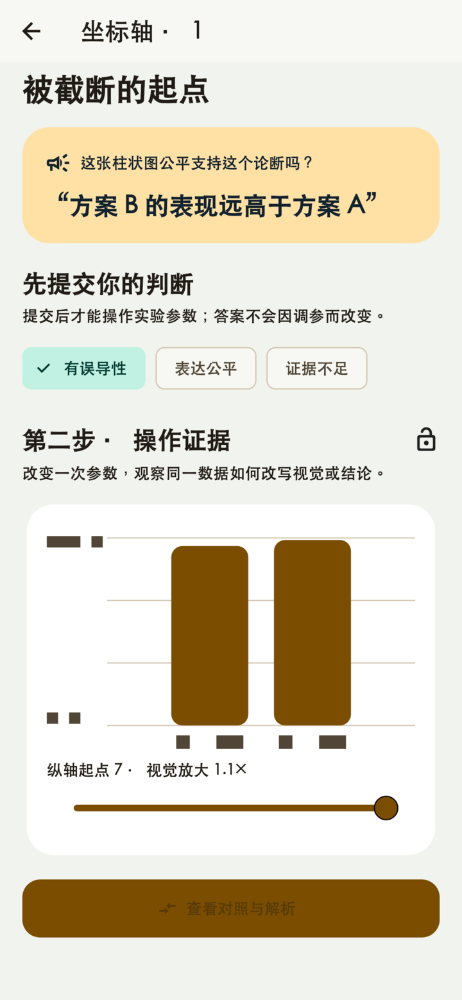
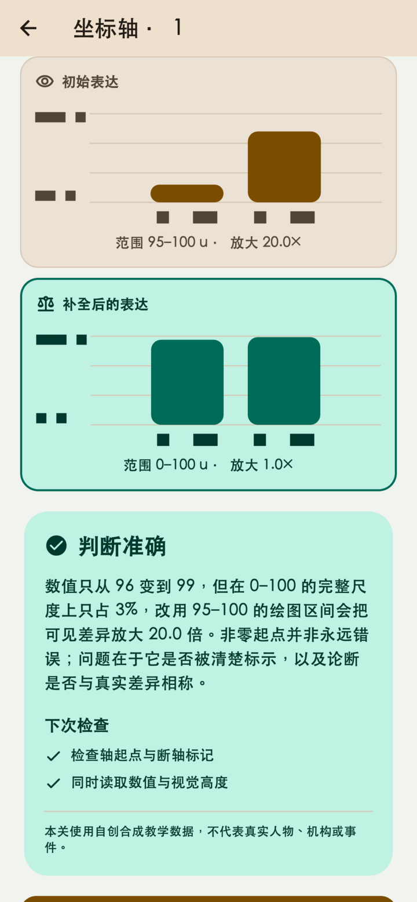
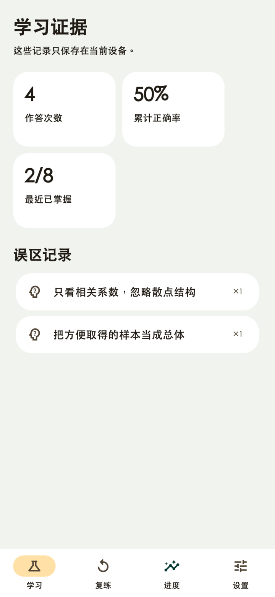

01
先提交判断
在“有误导性、表达公平、证据不足”之间选择，不靠事后改答案。
每一关都要求先承诺判断，再解锁实验参数；答案不会因为你看到了结果而被悄悄改写。
在“有误导性、表达公平、证据不足”之间选择，不靠事后改答案。
拖动尺度、切换异常点、重配样本或改写概率格式，观察表达怎样变化。
查看同一数据的公平对照和检查清单；错误关卡进入本地复练队列。
八个随包实验无需网络；联网时可检查经过来源、参数与校验值验证的版本化公开数据题目包。
识别被放大的视觉差异，也判断窄范围何时合理。
移动异常点、检查混杂因素，不让一个系数代替论证。
改变样本构成，观察总体估计如何漂移。
在相对值、绝对值和自然频率之间保持同一语境。
应用在设备上保存作答、正确性、完成时间和误区标签，用于进度统计与错题复练。没有账号，也不把学习记录上传给开发者。



当前版本不请求相机、相册、麦克风、位置、联系人或通知权限；不含广告、分析 SDK、购买或第三方 AI。联网仅用于读取经过校验的公开数据题目包，不上传作答或语言偏好。
阅读完整隐私政策请在邮件中说明设备平台、应用版本和问题场景。不要发送不必要的个人或敏感信息。